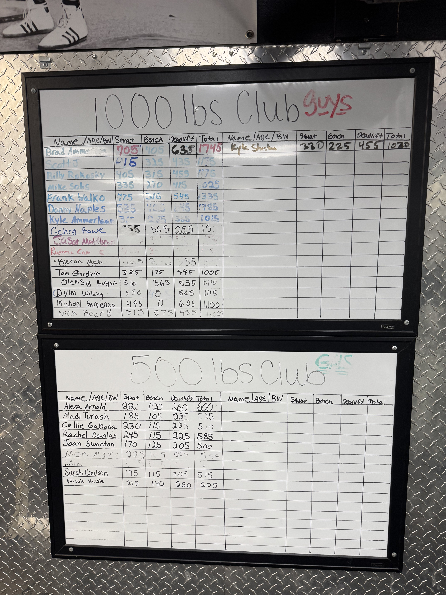
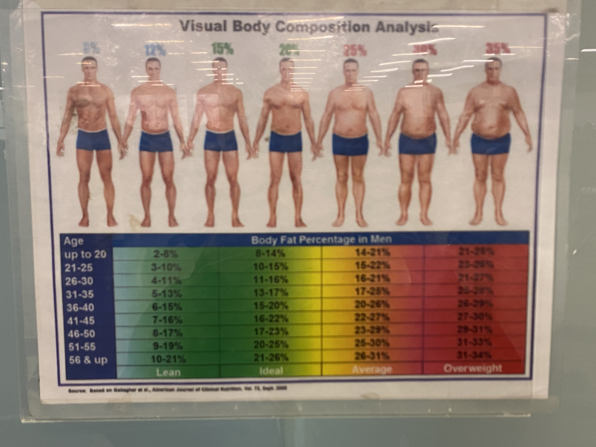
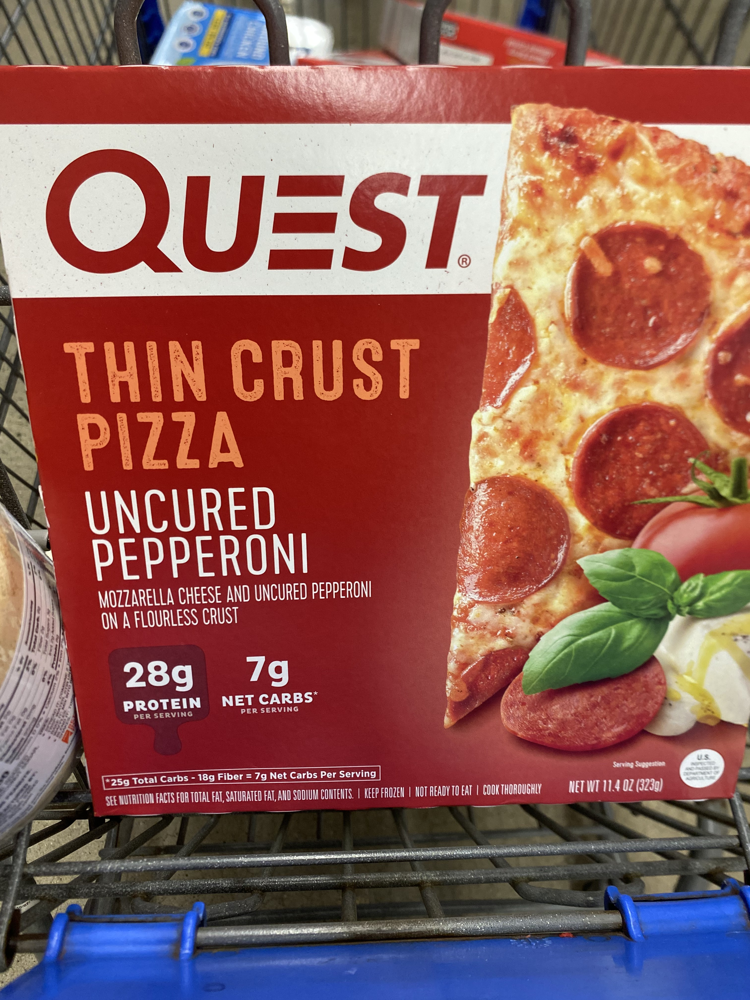
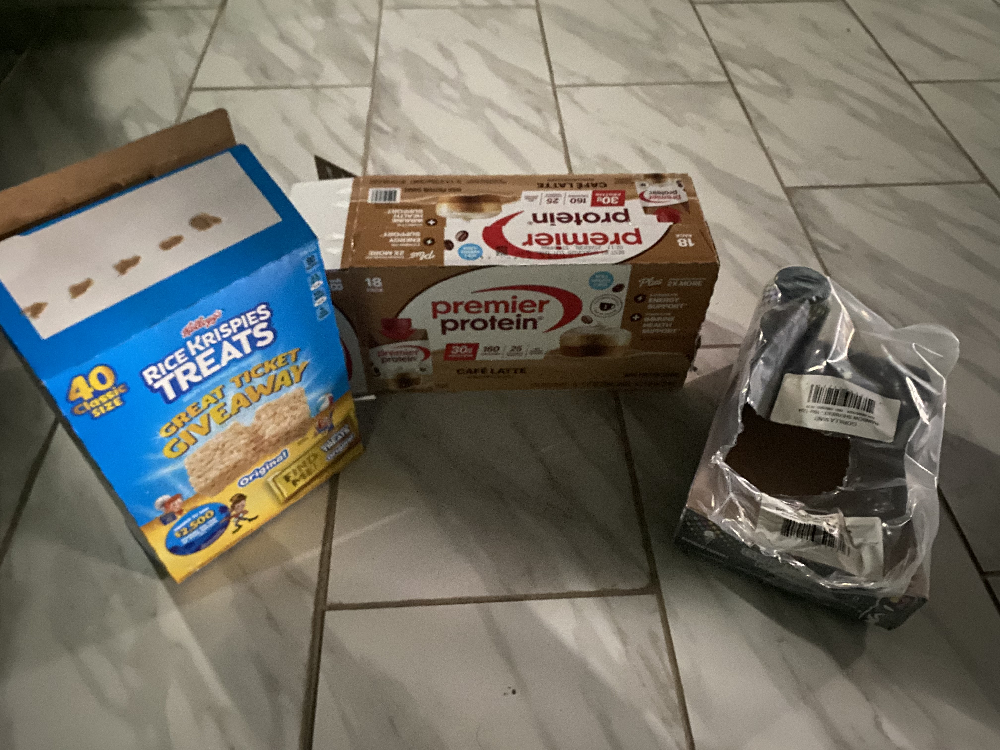

Introduction
This page works as an ontography of bodybuilding by focusing on the things, actions, and spaces that make up the everyday world of the topic. Instead of only defining bodybuilding through one object or one place, this page breaks it into two main parts: what happens in the gym, and what happens outside of the gym. Together, these groups show that bodybuilding is not just about lifting weights, but also about habits, routines, planning, food, and discipline.
The first group, In the Gym, focuses on the equipment, movements, and exercise spaces that directly shape training. These images help show what bodybuilding looks like physically and materially through machines, bars, dumbbells, benches, and other tools used during workouts. The second group, Out of the Gym, focuses on the less visible side of bodybuilding, such as dieting, meal preparation, supplements, water, sleep, and other everyday routines that support progress. These images matter because they show that bodybuilding is built just as much by what happens outside the gym as what happens inside it.
By organizing the page this way, the viewer can better understand bodybuilding as a whole system rather than just a collection of exercises. The page helps users see how the topic is shaped by both visible training practices and quieter daily habits. In that way, it supports the overall purpose of the site by showing the broader world that bodybuilding depends on.
In the Gym
This section focuses on the visible and physical side of bodybuilding. These images document the equipment, lifts, and workout spaces that shape training sessions directly. The goal of this group is to show how bodybuilding is built through repeated interaction with gym machines, free weights, and specific exercise setups.







Out of the Gym
This section focuses on the less obvious side of bodybuilding. These images show the routines and objects outside the gym that still play a major role in progress, such as dieting, hydration, meal prep, supplements, sleep, and recovery. Together, they help explain that bodybuilding depends on more than just lifting.


